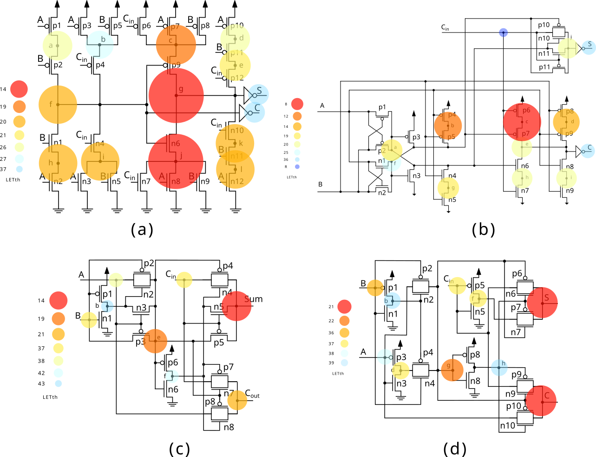
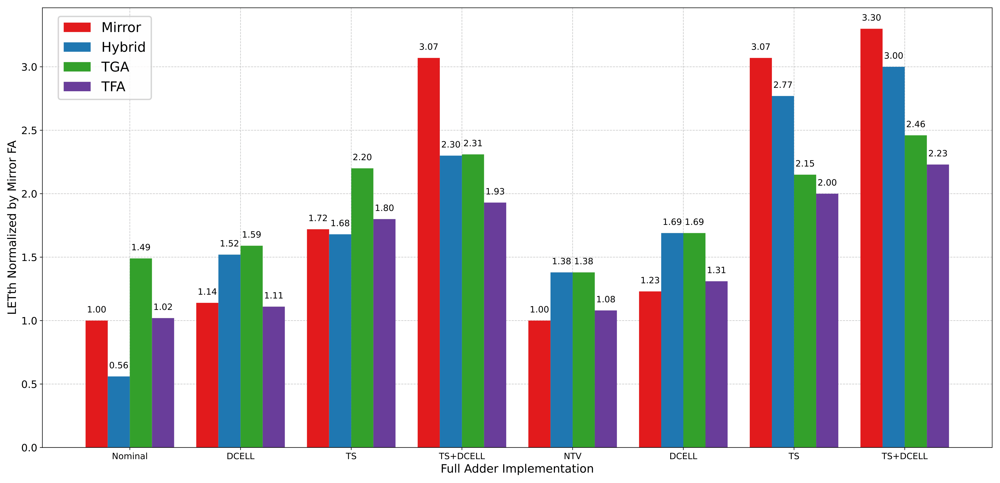

As technology scaling continues, ensuring the reliability of digital circuits under radiation effects becomes increasingly critical, especially for aerospace and high-reliability applications. This work investigates the radiation sensitivity of FinFET-based full adders, focusing on Single Event Transients (SETs) and their impact on circuit behavior.
Four widely used full adder topologies, Mirror, Hybrid, TGA, and TFA, are evaluated at 7 nm FinFET technology under both nominal and near-threshold voltage operation. The study explores three mitigation strategies: Decoupling Cells (DCELL), Transistor Sizing (TS), and a combined approach, providing a comprehensive analysis of robustness, critical nodes, and fault propagation behavior.

The results show that mitigation techniques significantly improve circuit robustness, with combined approaches consistently providing the best performance. Total error occurrence was reduced by up to 60% at nominal voltage and more than 35% at near-threshold operation. Additionally, improvements in LET threshold reached up to 3.3×, depending on the topology and mitigation strategy.
The analysis reveals that circuit topology plays a key role in radiation sensitivity, with different critical nodes and input vectors depending on the mitigation strategy. Transistor Sizing increases node critical charge, while DCELL stabilizes voltage levels, and their combination provides the most effective reduction in soft errors. These results offer practical guidelines for designing radiation-hardened arithmetic circuits in advanced FinFET technologies.
